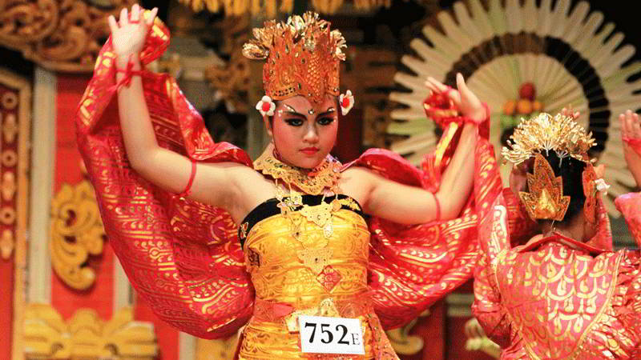

Tari Sanghyang
Tari Sanghyang adalah salah satu seni tari Bali yang termasuk dalam kelompok tari upacara atau tari wali. Sebuah kesenian kuno yang dikatakan sebagai peninggalan dari kebudayaan pra-Hindu. Di Bali, tari ini lebih banyak ditemukan dalam lingkup masyarakat pegunungan bagian utara dan timur.
Sanghyang adalah sebuah tarian sakral yang berfungsi untuk menolak bala (kesialan atau malapetaka). Tari ini disajikan dengan melibatkan seorang penari atau lebih dalam keadaan kerawuhan atau tidak sadarkan diri karena kemasukan roh suci atau juga roh binatang yang dipuja.
Masyarakat Bali sangat menyakini bahwa pada kisaran sasih kelima dan sasih keenam dalam penanggalan Bali, Ratu Gede Mecaling dengan wujud-wujud menyeramkan bergentayangan di Bali.
Ia datang untuk menyebarkan bencana penyakit pada penduduk desa, tanaman dan binatang. Untuk menaggulanginya, masyarakat mengadakan upacara “Nangiang Sanghyang” sebagai upaya memohon perlindungan.
Tari Sanghyang bisa dikatakan sebagai jalan komunikasi spiritual antara masyarakat Bali dan alam gaib. Ketika merujuk pada buku yang disusun I Made Bandem, Kaja And Kelod (1981) dan Ensiklopedi Tari Bali (1983), disebutkan tari ini terkait dengan Tuhan.
Oleh karena itu disajikan dengan diawali upacara menggunakan dupa atau kemenyan, nyanyian, serta doa-doa. Apabila permohonan dikabulkan, penari menjadi kerawuhan karena kemasukan Hyang yang turun ke bumi untuk menyelamatkan manusia.
Bisa disimpulkan, bahwa Tari Sanghyang juga sebagai sebutan penghormatan yang ditujukan kepada dewa, leluhur, serta roh suci dewa-dewi, roh binatang atau apapun yang dimuliakan oleh masyarakat Bali.
<< Kembali